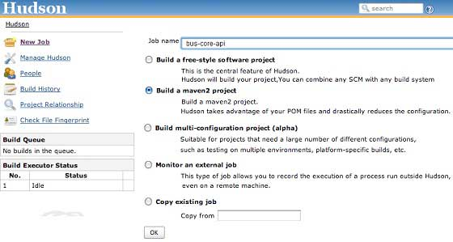

Maven Build Automation
Build Automation defines the scenario where dependent project(s) build process gets started once the project build is successfully completed,in order to ensure that dependent project(s) is/are stable.
Example
Consider a team is developing a project bus-core-api on which two other projects app-web-ui and app-desktop-ui are dependent.
app-web-ui project is using 1.0-SNAPSHOT of bus-core-api project
<project xmlns="http://maven.apache.org/POM/4.0.0"
xmlns:xsi="http://www.w3.org/2001/XMLSchema-instance"
xsi:schemaLocation="http://maven.apache.org/POM/4.0.0
http://maven.apache.org/xsd/maven-4.0.0.xsd">
<modelVersion>4.0.0</modelVersion>
<groupId>app-web-ui</groupId>
<artifactId>app-web-ui</artifactId>
<version>1.0</version>
<packaging>jar</packaging>
<dependencies>
<dependency>
<groupId>bus-core-api</groupId>
<artifactId>bus-core-api</artifactId>
<version>1.0-SNAPSHOT</version>
</dependency>
</dependencies>
</project>
app-desktop-ui project is using 1.0-SNAPSHOT of bus-core-api project
<project xmlns="http://maven.apache.org/POM/4.0.0"
xmlns:xsi="http://www.w3.org/2001/XMLSchema-instance"
xsi:schemaLocation="http://maven.apache.org/POM/4.0.0
http://maven.apache.org/xsd/maven-4.0.0.xsd">
<modelVersion>4.0.0</modelVersion>
<groupId>app-desktop-ui</groupId>
<artifactId>app-desktop-ui</artifactId>
<version>1.0</version>
<packaging>jar</packaging>
<dependencies>
<dependency>
<groupId>bus-core-api</groupId>
<artifactId>bus-core-api</artifactId>
<version>1.0-SNAPSHOT</version>
</dependency>
</dependencies>
</project>
bus-core-api project
<project xmlns="http://maven.apache.org/POM/4.0.0" xmlns:xsi="http://www.w3.org/2001/XMLSchema-instance" xsi:schemaLocation="http://maven.apache.org/POM/4.0.0 http://maven.apache.org/xsd/maven-4.0.0.xsd"> <modelVersion>4.0.0</modelVersion> <groupId>bus-core-api</groupId> <artifactId>bus-core-api</artifactId> <version>1.0-SNAPSHOT</version> <packaging>jar</packaging> </project>
Now teams of app-web-ui and app-desktop-ui projects require that their build process should kick off whenever bus-core-api project changes.
Using snapshot ensures that the latest bus-core-api project should be used but to meet above requirement we need to do something extra.
We've two ways
Add a post-build goal in bus-core-api pom to kick-off app-web-ui and app-desktop-ui builds.
Use a Continuous Integration (CI) Server like Hudson to manage build automation automatically.
Using Maven
Update bus-core-api project pom.xml
<project xmlns="http://maven.apache.org/POM/4.0.0"
xmlns:xsi="http://www.w3.org/2001/XMLSchema-instance"
xsi:schemaLocation="http://maven.apache.org/POM/4.0.0
http://maven.apache.org/xsd/maven-4.0.0.xsd">
<modelVersion>4.0.0</modelVersion>
<groupId>bus-core-api</groupId>
<artifactId>bus-core-api</artifactId>
<version>1.0-SNAPSHOT</version>
<packaging>jar</packaging>
<build>
<plugins>
<plugin>
<artifactId>maven-invoker-plugin</artifactId>
<version>1.6</version>
<configuration>
<debug>true</debug>
<pomIncludes>
<pomInclude>app-web-ui/pom.xml</pomInclude>
<pomInclude>app-desktop-ui/pom.xml</pomInclude>
</pomIncludes>
</configuration>
<executions>
<execution>
<id>build</id>
<goals>
<goal>run</goal>
</goals>
</execution>
</executions>
</plugin>
</plugins>
<build>
</project>
Let's open command console, go the C:\ > MVN > bus-core-api directory and execute the following mvn command.
C:\MVN\bus-core-api>mvn clean package -U
Maven will start building the project bus-core-api.
[INFO] Scanning for projects...
[INFO] ------------------------------------------------------------------
[INFO] Building bus-core-api
[INFO] task-segment: [clean, package]
[INFO] ------------------------------------------------------------------
...
[INFO] [jar:jar {execution: default-jar}]
[INFO] Building jar: C:\MVN\bus-core-ui\target\
bus-core-ui-1.0-SNAPSHOT.jar
[INFO] ------------------------------------------------------------------
[INFO] BUILD SUCCESSFUL
[INFO] ------------------------------------------------------------------
Once bus-core-api build is successful, Maven will start building app-web-ui project
[INFO] ------------------------------------------------------------------
[INFO] Building app-web-ui
[INFO] task-segment: [package]
[INFO] ------------------------------------------------------------------
...
[INFO] [jar:jar {execution: default-jar}]
[INFO] Building jar: C:\MVN\app-web-ui\target\
app-web-ui-1.0-SNAPSHOT.jar
[INFO] ------------------------------------------------------------------
[INFO] BUILD SUCCESSFUL
[INFO] ------------------------------------------------------------------
Once app-web-ui build is successful, Maven will start building app-desktop-ui project
[INFO] ------------------------------------------------------------------
[INFO] Building app-desktop-ui
[INFO] task-segment: [package]
[INFO] ------------------------------------------------------------------
...
[INFO] [jar:jar {execution: default-jar}]
[INFO] Building jar: C:\MVN\app-desktop-ui\target\
app-desktop-ui-1.0-SNAPSHOT.jar
[INFO] -------------------------------------------------------------------
[INFO] BUILD SUCCESSFUL
[INFO] -------------------------------------------------------------------
Using Continuous Integration Service with Maven
Using a CI Server is more preferable as developers are not required to updated bus-core-api project pom everytime a new project, for example app-mobile-ui is added as dependent project on bus-core-api project. Hudson automatically manages build automation using Maven dependency management.
Hudson considers each project build as job. Once a project code is checked-in to SVN (or any Source Management Tool mapped to Hudson), Hudson starts its build job and once this job get completed, it start other dependent jobs(other dependent projects) automatically.
In above example, when bus-core-ui source code is updated in SVN, Hudson starts its build. Once build is successful. Hudson looks for dependent projects automatically, and starts building app-web-ui and app-desktop-ui projects.